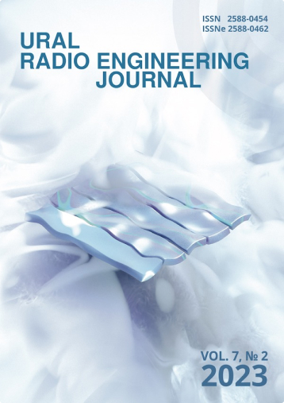
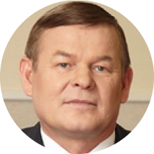

-

ISSN онлайн-версии:2588-0462
ISSN печатной версии:2588-0454
-

Князев Сергей Тихонович УрФУ им. первого Президента России Б. Н. Ельцина
Scopus
s.t.knyazev@urfu.ru
Родился в 1952 году в Кировской области, в 1975 закончил Уральский политехнический институт, а в 1984 защитил кандидатскую степень. В 2005 защитил докторскую, после чего начал работу на кафедре ВЧСРТ в УрФУ в качестве заведующего лабораторией. Он является главным редактором журнала “Известия высших учебных заведений. Радиоэлектроника” и членом редакционного совета.
Является заместителем председателя Совета регионального отделения Учебно-методического объединения вузов по образованию в области радиотехники и электроники (2005-2016), а также членом координационного Совета предприятий телекоммуникаций Свердловской области (2004-2012) и коллегий Министерства информационных технологий Свердловской области (2011-2012), Министерства транспорта и связи Свердловской области (2013-2017), учебно-методического совета СПбГЭТУ “ЛЭТИ” (2005 - наст.вр.). Он также является заместителем председателя Ученого совета УрФУ (2009-2010) и председателем Методического совета УрФУ (с 2009).